Choosing a microscope
Which instrument should you use? This page starts from your question and your sample, then explains each technique the unit offers or plans to offer: what it shows, what the sample needs, and when another technique is the better choice. No microscopy background needed.
How to read this page. Numbers marked Manufacturer figures come from the makers' documentation and are best-case values on ideal test samples. Statements marked To confirm with staff concern how the unit's instruments are set up and have not been checked for this page. Planned, not yet installed marks equipment the unit plans to add but does not have yet, and the shorter Planned marks a planned service; the staff can tell you the expected timing. Times and ranges in the lists are rough guides from general practice. The staff will give you real numbers for your sample. Example images come from the sources credited under each; they may be replaced by the unit's own images over time.
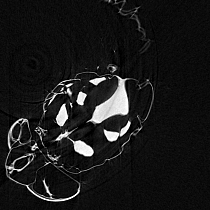
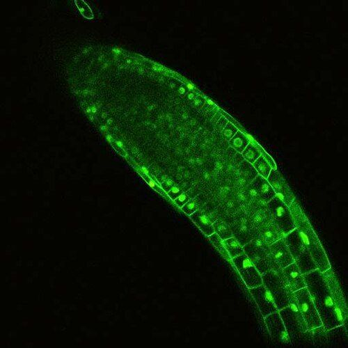
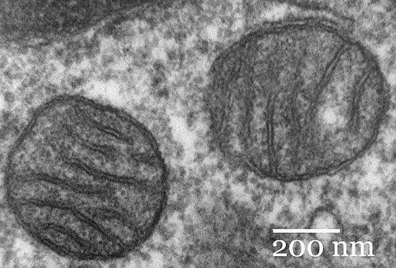
Start from the question, not the instrument
New users often ask for "the confocal" or "the electron microscope" because a colleague used one. A better start is to say what you need to see and what state your sample is in. Those two answers usually narrow the choice to one or two techniques.
Four questions to answer first
- What do you want to see? Surface shape and texture, internal structure in 3D, fluorescently labelled molecules or cells, elements and chemistry, or something that changes over time. The chart maps each answer to a technique to start with.
- What state is the sample in? Only light microscopes image living samples. Electron microscopes work in a vacuum, so samples must be dried, frozen or embedded in resin. Micro-CT needs no vacuum, but soft wet tissue shows little contrast unless it is stained. The second chart shows which states each technique accepts.
- How big is the sample, and how small is the detail? Each technique covers a band of sizes. A whole seed and a membrane inside one of its cells need different instruments. The scale ladder shows the bands.
- 2D or 3D, how many samples, how fast? A yes-or-no answer on fifty slides is a widefield job. A 3D scan of one root takes minutes on the light sheet and up to hours on the micro-CT. Volume EM takes weeks from fixation to a finished stack. Plan sample numbers with this in mind.
The short version, in words
- Living, or fluorescent labels: light microscopy. Widefield for quick checks on thin samples, confocal for thick samples and 3D, STED for detail below 200 nm, light sheet for whole organs, embryos and seedlings.
- Tissue architecture across many samples: histology on paraffin sections, a new service at the unit.
- Inside a dense or dry object, intact: micro-CT.
- Surfaces at high magnification: SEM. Cryo-SEM, once installed, if the sample collapses when dried. Micro-CT can also show a surface, as the fly example in chapter 7 shows, when a few-micrometre voxel is enough and you want the surface in its 3D context: the whole object, both sides, no coating. SEM is for finer surface detail.
- Membranes and organelles: STEM in the SEM for thin sections; volume EM for a 3D block, once installed.
- Two questions at two scales: combine techniques; see correlative workflows.
Then tell us, before you prepare samples
Your answers to these four questions are what the Project Initiation Form asks for. Fill it in, with the publication policy signed by your PI, and open a Bookit account: the kick-off meeting is booked there. The meeting is with you and your PI, or someone on their behalf, and it is required before any work starts. Your contact for it is the staff member for the technique: Einat Zelinger, Head of Unit, for the SEMs, cryo-SEM, EDS, the confocal microscopes and the EVOS; Tally Kossovsky for the SEMs, TEM and micro-CT; Daniel Waiger for image analysis, the light sheet, the confocal microscopes, the EVOS, AFM and micro-CT support; for other techniques, ask the staff. All three develop sample mounting methods, so bring mounting questions to the kick-off meeting. Sample preparation differs for every technique, and a sample prepared for one is often useless for another, so wait for the meeting before preparing anything.
After the kick-off meeting the staff train you on the instrument, and from then on you book your own time in Bookit. The full sequence is on the Start here section of the home page.
The scale ladder: which technique covers which size
Every technique has a finest detail it can resolve and a largest sample or field it can take. Find your object on this ladder and the detail you care about. The candidates are the bars that span both.
Reading the ladder
All light microscopes meet a wall near 200 nm. Even the best lenses cannot focus light to a spot much smaller than about 200 nm (wavelength ÷ (2 × NA)); Microscopy basics explains why. STED gets past the wall with a trick described in chapter 5. X-rays and electrons have far shorter wavelengths, so micro-CT and SEM are limited by other things: the detector, the size of the sample and the beam.
For any technique that records a whole field at once, finer detail means a smaller field. On the micro-CT this is a simple rule:
Details smaller than about two voxels are lost (see Nyquist sampling in Microscopy basics).
The same trade-off holds on every microscope: a 10× objective sees a wide field with coarse detail, a 100× objective a small field with fine detail. Tiling many fields together helps, but costs time and storage.
The numbers behind the bars
- Histology (paraffin sections): cellular detail around 0.5–1 µm over whole-organ fields.
- Widefield (EVOS FL Auto): about 250 nm at best, with a high-NA objective.
- Confocal (SP8, Stellaris): about 180–200 nm.
- STED (Stellaris): about 50–80 nm in practice.
- Light sheet (MuVi SPIM): around 1 µm across the image and several micrometres in depth, over fields of millimetres.
- Micro-CT (SkyScan 1272): voxels of 2–20 µm in practice. The smallest details you can resolve are about two to three voxels wide. Bruker quotes details down to 0.35 µm. Manufacturer figures
- SEM (JSM-IT710HR, JSM-IT800): about 1 nm on the IT710HR; sub-nanometre on the IT800 in its best configuration. Manufacturer figures The unit's IT800 configuration has not been confirmed for this page. To confirm with staff Biological samples rarely reach these values; coating, beam damage and the sample itself set the limit.
- TEM (reference technique): fields of tens of micrometres; finest detail below 1 nm for certain large structures such as actin–myosin filaments, dynein, collagen, fibrin and glycogen. Whether the unit offers TEM itself, ask the staff. To confirm with staff
- Volume EM (Katana in the SEM): slices as thin as 20 nm. Manufacturer figures Planned, not yet installed
Histology: paraffin sections, stains and multiplexing
The classic starting point for tissue questions. Tissue is fixed, embedded in wax, cut into thin slices and stained, so a whole organ can be seen cell by cell on one slide. The unit's histopathology service is new and in development: brightfield stains today, with multiplex staining planned.
What it does
Tissue is fixed, typically in 10% neutral-buffered formalin for 24–48 hours. Plant tissue is often fixed in FAA (formalin–acetic acid–alcohol) under vacuum to remove air, and cut thicker, often 8–12 µm. The tissue is dehydrated, cleared and embedded in paraffin wax (FFPE: formalin-fixed, paraffin-embedded); a microtome then cuts sections, typically 3–5 µm thick for animal tissue, which are stained and imaged in brightfield.
One slide can hold a whole small organ (for example a mouse kidney), a leaf or a stem cross-section; here the microscope is the easy part and the preparation is the craft. Many labs scan whole slides into one large image, a whole-slide image, for analysis in software such as QuPath.
Typical brightfield stains
Ask the staff which are offered. To confirm with staff
- H&E: animal tissue; nuclei purple, cytoplasm pink.
- PAS: carbohydrates and fungal walls, magenta.
- Masson's trichrome: collagen blue or green, muscle red.
- Alcian blue: acidic mucins, blue.
- Toluidine blue O (plant): lignified walls blue-green, cellulosic walls purple.
- Safranin O / Fast Green (plant): lignified walls red, cellulosic walls green.
- Lugol's iodine: starch, blue-black. Phloroglucinol: lignin, red-violet (usually on fresh sections; they fade, so image them the same day).
- Chromogenic IHC: usually one protein per section, brown (DAB).
Multiplexing: many markers on one section
A brightfield stain shows morphology, and IHC adds one or two markers per section. Multiplex immunofluorescence shows several on the same section: typically 4–8 with sequential tyramide-signal-amplification staining, such as the Opal method, and tens with cyclic immunofluorescence. Because the tyramide dye binds permanently to the tissue, the antibodies are stripped between rounds, so several antibodies raised in the same species can be used in one panel.
Every cell keeps its position, so you can see which cell types sit next to which, where a pathogen lies relative to vessels or vascular bundles, and count each cell type in QuPath.
Multiplex staining at the unit: Planned Requests from researchers help the staff choose which panels to set up first, so tell them early.
Some fields are moving further, to spatial transcriptomics, which maps hundreds to thousands of RNAs in the same section. This is a general trend in the field, not a plan of the unit.
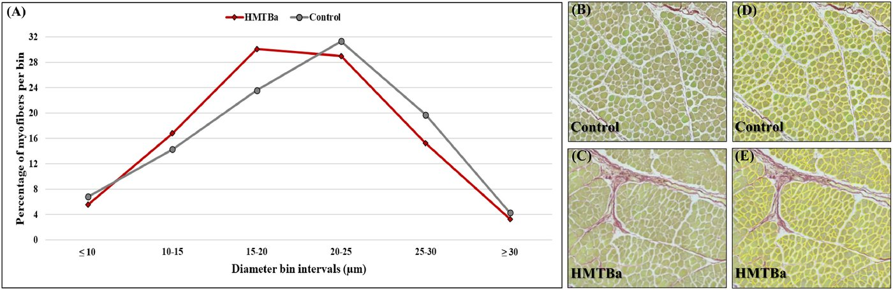
Figure 3 from Dayan et al., Poultry Science (2023): A deep learning-based automated image analysis for histological evaluation of broiler pectoral muscle. Licence: CC BY 4.0. Reproduced by the authors. Resized for the web.
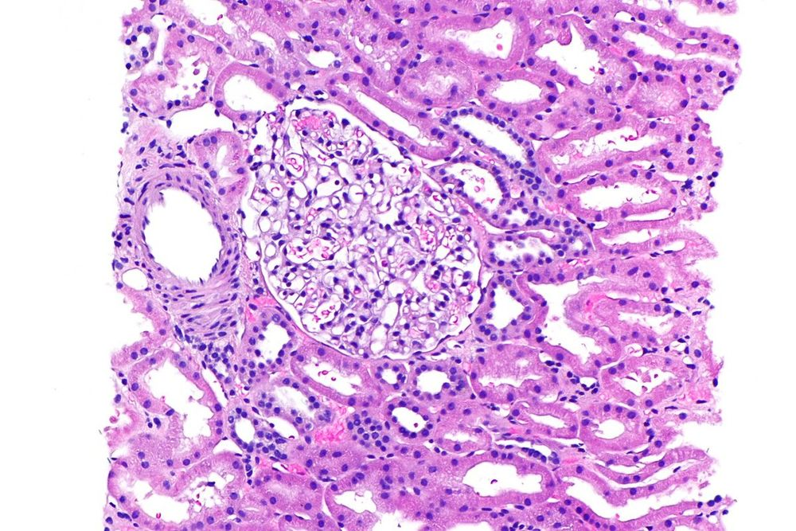
Image: Nephron, via Wikimedia Commons, CC BY-SA 3.0.
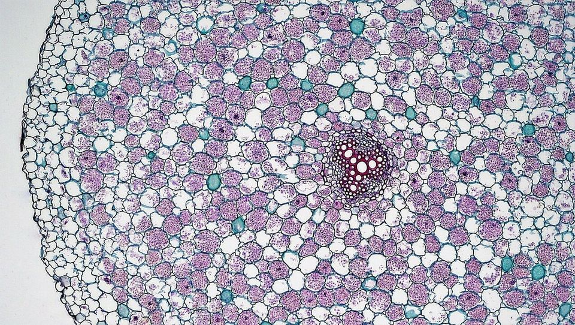
Image: Berkshire Community College Bioscience Image Library, via Wikimedia Commons, CC0 1.0.
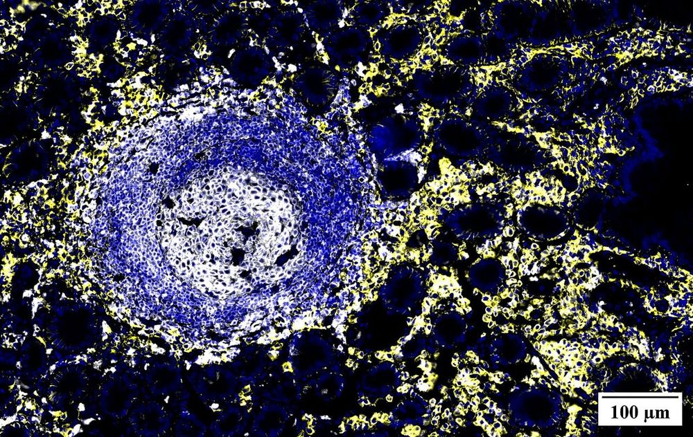
Image: DntsS (i3S HEMS facility, Porto), via Wikimedia Commons, CC BY-SA 4.0.
Consider it when
- You need tissue architecture at cell resolution across a whole organ or lesion.
- You ask classic pathology questions: inflammation, necrosis, tumours, infection sites.
- You want many samples processed the same way, or blocks you can re-cut years later.
Not the right tool when
- You need 3D: use micro-CT, light sheet, or confocal of cleared tissue.
- The sample must stay alive, or you need surfaces (SEM) or ultrastructure (electron microscopy).
- Formalin and wax damage your antigen or RNA: ask the staff about frozen sections.
What the sample needs
- Prompt fixation in about 10–20 times the tissue volume of fixative, in pieces a few millimetres thick, with the cutting plane agreed in advance.
- For IHC and multiplex: antibodies validated on FFPE tissue. Over- or under-fixed tissue stains unevenly; antigen retrieval can only partly make up for it.
- Autofluorescence: fixed tissue, and especially plant tissue (lignin, chlorophyll), glows on its own; a multiplex panel has to avoid or remove it.
What you get
- 2D sections, 3–5 µm (animal) or often 8–12 µm (plant), with cellular detail over whole-organ fields; permanent slides and blocks for re-cutting.
- Fluorescence imaging with unmixing for multiplex: beyond about four markers the dyes overlap, so the image is recorded in many narrow colour bands and separated in software, giving a table of markers per cell.
- In general practice about one to two weeks from fixed tissue to stained slides; ask for the service's current turnaround.
Typical uses in the faculty's fields
- Plant science: anatomy, pathogen entry, graft unions.
- Veterinary and animal science: organ pathology in poultry, fish and ruminants.
- Food science, entomology, environment: meat and plant-based products, insect tissues, fish and invertebrate biomarkers.
At the unit
- New histopathology service for paraffin-embedded samples, in development; brightfield stains now.
- Multiplex staining: Planned
- Imaging on the unit's light microscopes, for example the EVOS for brightfield. To confirm with staff
- Contact: the CSI unit, core.csi@mail.huji.ac.il.
Widefield fluorescence and brightfield
The simplest and fastest kind of light microscope. It lights the whole field at once and takes a photograph with a camera.
What it does
In brightfield mode, light shines through the sample and you see it by what it absorbs, as in a teaching microscope. In fluorescence mode, an LED of one colour excites the dyes in the sample, and a filter passes only the light the dyes give back. Each dye gets its own channel: an excitation colour and a filter, held together in a filter cube.
Because the whole field is lit, every depth of the sample glows, not only the plane in focus. Light from above and below the focal plane reaches the camera as a haze over the sharp image. In a thin sample, such as a layer of cells, a 10 µm section or bacteria on a slide, the haze is small and the image is sharp. In a whole leaf or a root tip, the haze swamps the detail, and a confocal or light sheet is the better tool.
The EVOS FL Auto is where most projects start: check whether a staining or transformation worked, count cells, survey slides and plates. It takes seconds per image, so it is also the right tool when you have many samples and a simple question.
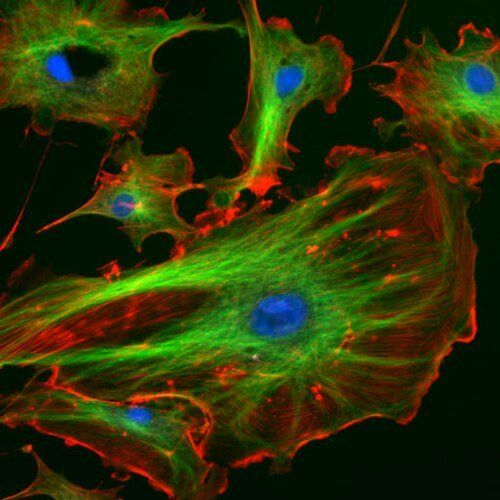
Image: NIH ImageJ sample image (author not named on the file page), via Wikimedia Commons, public domain.
Consider it when
- You need a fast answer: did the staining work, how many cells, which wells.
- The sample is thin and flat: cell layers, smears, sections, spores.
- You have many slides or whole plates to survey, including stained histology sections (chapter 2).
Not the right tool when
- The sample is thicker than a few cell layers: use confocal or light sheet.
- You need detail below about 250 nm: use STED or SEM.
- You need a 3D reconstruction.
What the sample needs
- On a slide under a coverslip, in a dish or in a well plate.
- Living or fixed.
- Dyes whose colours match the instrument's filter cubes. Check the list with the staff before you buy dyes.
What you get
- 2D images: one per fluorescence channel, plus brightfield.
- Detail down to about 250 nm with a high-NA objective.
- Field of view from a fraction of a millimetre to a few millimetres per image, depending on the objective.
- Seconds per image; minutes per plate.
Typical uses in the faculty's fields
- Plant science: checking fluorescent reporters in protoplasts or thin tissue; pollen viability stains.
- Food science: counting yeast and bacteria; starch granules and emulsion droplets in brightfield.
- Soil and environment: stained bacteria and fungal hyphae on slides.
- Veterinary science: stained smears, tissue sections, cultured cells.
At the unit
- EVOS FL Auto widefield microscope (Thermo Fisher Scientific, Invitrogen).
- Startup and shutdown guide.
- Time-lapse of living cells over hours: ask whether an environmental chamber is available. To confirm with staff
- Contact: Einat Zelinger or Daniel Waiger.
Confocal: sharp slices through thick samples
The workhorse for fluorescence in tissue. A confocal removes the out-of-focus haze, so a thick sample can be cut into sharp optical slices without a knife.
What it does
A confocal microscope focuses a laser to a single spot and scans it across the sample, point by point and line by line. The light coming back from the sample passes through a pinhole placed where the in-focus spot is imaged. Light from above and below the focal plane arrives there out of focus and is mostly blocked. What remains is an optical section: a sharp slice through a thick sample, without cutting it.
Moving the focus up or down and repeating gives a z-stack, a 3D block of slices (basics, section 5). Several lasers and adjustable detectors record several dyes as separate channels. This makes the confocal the standard tool for co-localisation: asking whether two labelled molecules sit in the same place. The main trap is bleed-through between channels (basics, section 4).
Optical sectioning has a price. Scanning point by point is slower than a camera snapshot, and the focused laser bleaches dyes faster. Depth is limited by scattering: in most tissues the image degrades somewhere between a few tens and a few hundred micrometres in. Deeper than that, cut sections, or clear the tissue and use the light sheet.
The unit has two confocals: the Leica SP8 and the Leica Stellaris. The Stellaris also does STED, the next chapter.
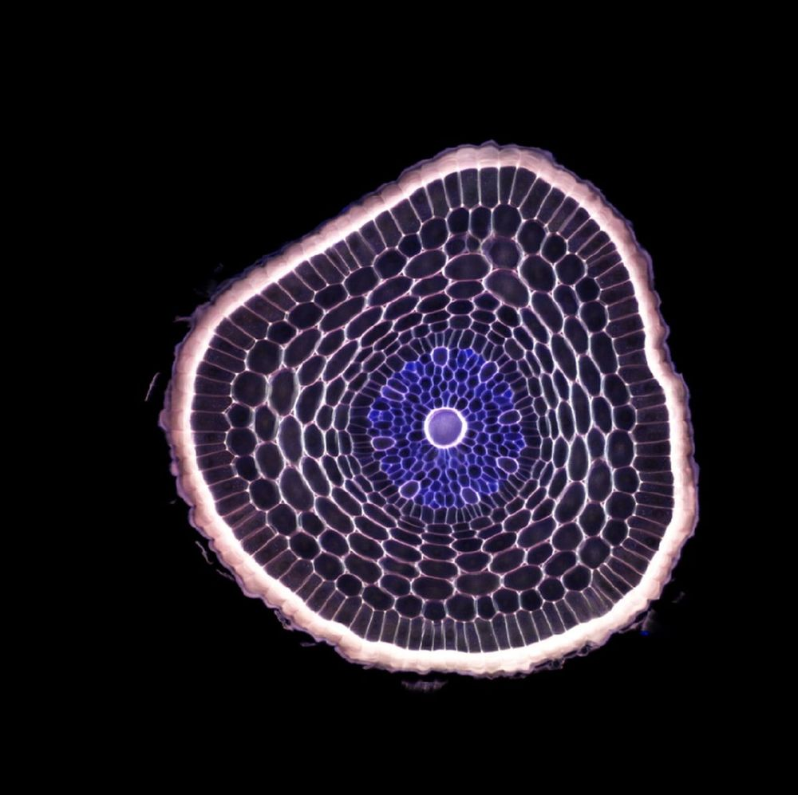
Image: Mark Talbot, CSIRO, via Wikimedia Commons, CC BY 3.0.
Consider it when
- The sample is fluorescent and thicker than a few cell layers: leaves, root tips, tissue sections, biofilms.
- You need 3D z-stacks or optical sections.
- You want to co-localise two to four labels.
- You follow living tissue over minutes to hours, with care for the light dose.
Not the right tool when
- You need detail below about 180 nm: use STED or electron microscopy.
- The whole sample is millimetres to centimetres across: use light sheet or micro-CT.
- You need quick counts on many slides: use widefield.
What the sample needs
- Fluorescent labels, or useful autofluorescence.
- Mounted under a coverslip in a medium that suits the objective (basics), or living in a glass-bottom dish.
- Fixed or alive.
What you get
- 2D optical sections or 3D stacks, several channels.
- About 180–200 nm in the image plane; roughly two to three times coarser along the focus axis.
- Tens of micrometres to about a millimetre per field; larger areas by tiling.
- Seconds per slice; minutes to tens of minutes per stack.
Typical uses in the faculty's fields
- Plant science: where a fluorescent-tagged protein sits in the cell; cell walls and nuclei in root tips.
- Plant–microbe biology: labelled bacteria or fungi on and in roots.
- Food science: fat and protein networks in cheese, emulsions and gels with fluorescent stains.
- Veterinary science and entomology: immunostained tissue sections, insect tissues.
At the unit
- Leica SP8 and Leica Stellaris confocals.
- Stellaris guide and LIF data scripts (draft documentation). SP8 guide in preparation.
- Contact: Einat Zelinger or Daniel Waiger.
STED: past the 200 nm wall
STED stands for stimulated emission depletion. It is a confocal with a second laser that shrinks the glowing spot, so details three to four times finer become visible.
What it does
A confocal's laser spot cannot be focused smaller than about 200 nm, so details closer together than that blur together. STED adds a second laser shaped like a doughnut: bright in a ring, dark in the centre. Where the doughnut light hits, it forces dye molecules back to their resting state before they can glow. Only the molecules in the doughnut's hole still glow. The stronger the doughnut, the closer to the centre it switches molecules off, so the region that still glows shrinks to about 50–80 nm in practice.
The gain has costs. STED needs dyes that survive the strong depletion light, and not every dye does. The sample must be mounted carefully, with no refractive-index mismatch, because the doughnut has to stay sharp. Images take longer and the field is small. Most STED work is on fixed samples in 2D or in thin stacks close to the coverslip. Living samples are possible with suitable labels, but harder.
Thick or strongly scattering samples, including most intact plant tissue, distort the doughnut and lose the gain. Thin cells, sections, isolated organelles or protoplasts near the coverslip work best. If the details you need to tell apart are more than about 200 nm apart, a normal confocal image is faster and gentler and loses nothing.
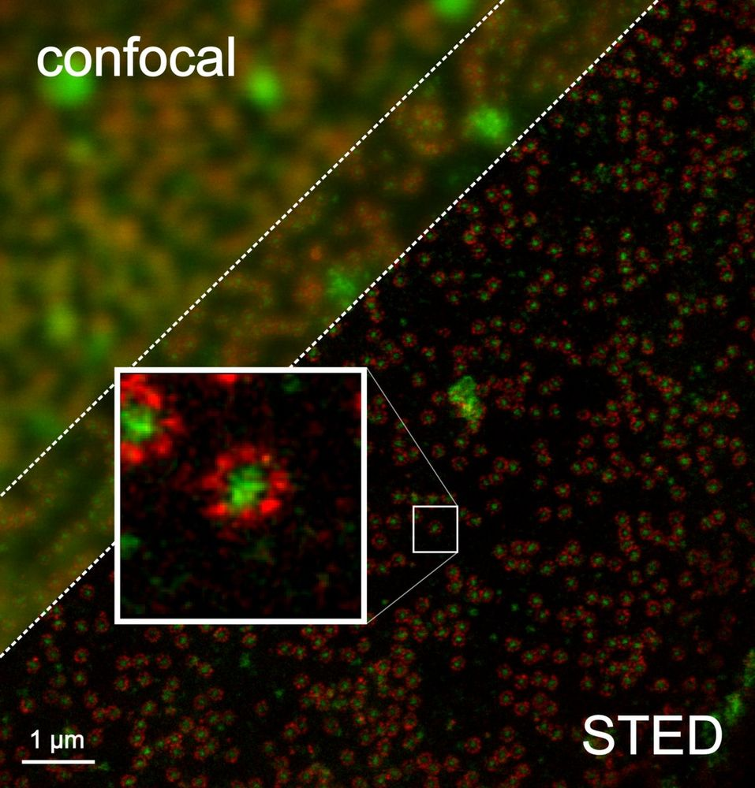
Image: Tassekaffee, via Wikimedia Commons, CC BY-SA 3.0.
Consider it when
- The structure of interest is between about 50 and 200 nm: protein clusters, cytoskeleton, membrane domains, sub-organelle detail.
- You need molecular labels at a resolution a confocal cannot give.
- You have already confirmed the staining on a confocal.
Not the right tool when
- You need detail below about 50 nm, or the unlabelled context around your label: use electron microscopy or CLEM.
- The sample is thick tissue far from the coverslip.
- You need many samples quickly.
What the sample needs
- STED-compatible dyes. Ask the staff before you order antibodies.
- High-precision coverslips (#1.5H, 0.17 mm) and a mounting medium matched to the objective.
- A thin, well-fixed sample with the structure near the coverslip.
What you get
- 2D images or thin stacks, usually one to three channels.
- About 50–80 nm in practice.
- Fields of tens of micrometres.
- Minutes per image.
Typical uses in the faculty's fields
- Plant cell biology: plasmodesmata, cytoskeleton, membrane protein domains in protoplasts or thin tissue.
- Microbiology: protein positions inside single bacteria.
- Veterinary and biomedical research: organelle detail in cultured cells.
At the unit
- Leica Stellaris with STED.
- Stellaris guide.
- Contact: Einat Zelinger or Daniel Waiger.
Light sheet: big samples, fast and gently
A light sheet microscope lights only the plane it is recording. That makes it fast and gentle, and suited to whole organs, embryos and seedlings, cleared or alive.
What it does
A light sheet microscope sends a thin sheet of light into the sample from the side and records the lit plane with a camera placed at a right angle to the sheet. Only the plane being imaged is lit, so the rest of the sample is not bleached while it waits its turn. The camera records a whole plane at once instead of scanning point by point, so a large 3D volume takes minutes rather than hours.
The samples fall into two groups. Cleared samples are fixed tissue made transparent with chemicals that remove or match the substances that scatter light. Clearing takes days to weeks, but afterwards a whole organ, seed or insect can be imaged in 3D. Living samples, such as embryos, seedlings and small organisms, are held in gel or medium and followed for hours or days with little light damage.
Detail is around 1 µm across the image and several micrometres in depth, coarser than a confocal, but over millimetres. Files are large: tens to hundreds of gigabytes per experiment is common. The unit's h5 to TIFF converter turns them into stacks that Fiji opens.
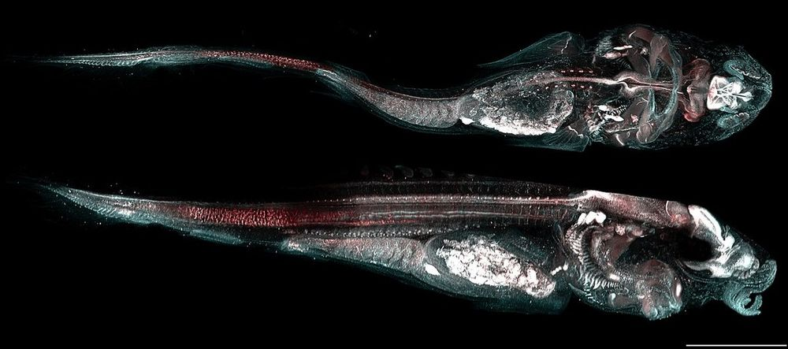
Image: LexyLordman (CCMAR Quantitative Bio-Imaging lab), via Wikimedia Commons, CC BY-SA 4.0.
Consider it when
- The sample is large and transparent, or can be cleared: whole organs, seeds, embryos, roots, insects.
- You want to follow development or growth over hours or days.
- You need many 3D volumes quickly.
Not the right tool when
What the sample needs
- Transparent: cleared, or naturally clear.
- Fluorescent labels that survive clearing, if cleared.
- Mounted in a holder or gel that fits the chamber. Agree the clearing method and mounting with the staff before you start; not every clearing protocol suits every instrument.
What you get
- 3D volumes, several channels, and time series for living samples.
- Detail around 1 µm across the image, several micrometres in depth.
- Fields of millimetres; ask the staff about the largest sample the chamber takes. To confirm with staff
- Minutes per volume; large files.
Typical uses in the faculty's fields
- Plant science: root growth and lateral root formation in living seedlings; cleared seeds and flowers.
- Entomology: cleared whole insects or insect organs.
- Veterinary science: cleared organs and embryos.
At the unit
- Luxendo MuVi SPIM light sheet microscope.
- h5 to TIFF converter and image-processing notes. Startup guide in preparation.
- Contact: Daniel Waiger.
Micro-CT: inside the sample, without cutting it
A CT scanner small enough for a bench. It shows the internal structure of a sample in 3D, at micrometre detail, and leaves the sample intact.
What it does
X-rays pass through the sample onto a detector. Dense parts absorb more and cast darker shadows. The sample turns in small steps, and a shadow image, called a projection, is recorded at each angle. Software then reconstructs the 3D volume from the projections. You can slice the result in any direction, measure volumes and thicknesses, count pores, and render it in 3D.
Contrast comes from differences in density and composition: air against tissue, tissue against mineral, starch against protein. Dense or dry material such as seeds, wood, bone, insects and soil gives strong contrast with no preparation. Soft wet tissue absorbs almost like water and looks flat. It needs a contrast stain containing a heavy element such as iodine, or careful drying.
At edges between materials you also see thin bright and dark fringes. They come from X-rays bending slightly at boundaries (phase contrast), not from absorption. Phase retrieval can turn them into extra contrast, which helps with soft tissue. The phase retrieval explainer shows this on real data from this unit.
Detail depends on sample size (chapter 1): small samples allow small voxels. In practice voxels are 2–20 µm, and the smallest details you can resolve are about two to three voxels wide. Scans take from tens of minutes to many hours, plus reconstruction. The sample must not move or dry out during that time.

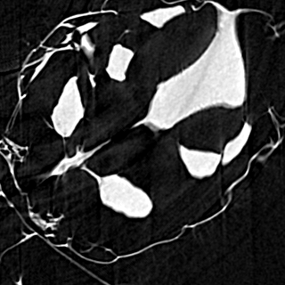

Consider it when
- You need the internal structure in 3D and want to keep the sample whole.
- The sample is dense or dry: seeds, grains, wood, roots in soil, insects, bone, soil aggregates, packaging, dry foods.
- You want to measure porosity, volumes, thickness or shape.
- You need to find a target inside a sample before cutting it for another technique.
- You want a surface in its 3D context, as in the fly example above: the whole object, both sides, no coating, when a few-micrometre voxel is enough. For finer surface detail, use SEM.
Not the right tool when
What the sample needs
- Held firmly so it cannot move for the whole scan: in a tube, foam, wax or a holder.
- Dry, or sealed so it does not dry out during the scan.
- Soft tissue: contrast staining, which takes days.
- Small enough for the voxel size you need (chapter 1).
What you get
- A 3D volume (a stack of slices). Grey values reflect X-ray absorption.
- Voxels of 2–20 µm in practice; details down to about two to three voxels.
- Samples from millimetres to centimetres.
- Tens of minutes to many hours per scan, plus reconstruction.
Typical uses in the faculty's fields
- Agriculture: grain filling, internal seed damage, hidden insect infestation, root systems in soil.
- Soil and environment: pore networks and aggregate structure.
- Food science: air cells in bread and foams, fat and sugar distribution in dry products.
- Entomology: insect anatomy; see the fly scan in basics, section 6.
- Veterinary science: bone and teeth.
At the unit
- Bruker SkyScan 1272: X-ray source 20–100 kV, 10 W. Manufacturer figures
- Guide, manuals, phase retrieval explainer.
- Contact: Tally Kossovsky, with support from Daniel Waiger.
Scanning electron microscopy (SEM)
An SEM scans a fine beam of electrons over the sample and builds an image from what comes back. It shows surfaces at detail from millimetres down to nanometres, and can also show what they are made of.
What it does
Electrons have a far shorter wavelength than light, so an electron beam can be focused to a spot nanometres wide. The SEM sweeps this spot across the sample. At each point the beam knocks electrons out of the sample or bounces back off it, and detectors count them. The count becomes the brightness of that pixel. Two signals matter most:
- Secondary electrons (SE) are slow electrons from the top few nanometres. Edges and slopes release more of them, so the image looks like a lit 3D surface. SE images show topography: shape and texture.
- Backscattered electrons (BSE) are beam electrons that bounce back from deeper in. Heavy elements bounce more of them, so heavy regions look brighter. BSE images show composition: mineral grains in organic matter, metal particles, heavy-metal stains.
The beam also makes the sample emit X-rays with energies typical of each element. An EDS detector sorts them by energy and maps which elements are where. Both of the unit's SEMs have EDS.
Preparing for the vacuum
Vacuum, drying and coating. Electrons scatter in air, so the chamber is under high vacuum and samples must be dry. Biological samples are usually fixed, dehydrated and critical-point dried, so soft structures do not collapse. Non-conducting samples collect charge from the beam (charging), which causes glare and drift; a thin conductive coating carries it away.
Low vacuum lets a little gas into the chamber. The gas neutralises the charge, so uncoated samples can be imaged without a metal coat, at some cost in resolution. It does not keep wet samples wet: water still evaporates at these pressures. For wet or soft samples, use cryo-SEM (planned). Which of the unit's SEMs has a low-vacuum mode has not been confirmed for this page. To confirm with staff
Voltage. Low accelerating voltage (around 1 kV) keeps the signal close to the surface: it shows fine surface features and causes less charging, although the beam spot is somewhat larger. Higher voltage (10–30 kV) gives a finer spot and reaches deeper, giving more BSE signal and the X-rays needed for EDS.
The unit's SEMs Manufacturer figures
Both are JEOL field-emission SEMs.
- JEOL JSM-IT710HR: in-lens Schottky field-emission gun; 0.5–30 kV; resolution 1.0 nm at 20 kV and 3.0 nm at 1 kV in high vacuum, 1.8 nm at 15 kV in low vacuum; large chamber; SE and BSE detectors; EDS (fitted at the unit).
- JEOL JSM-IT800: Schottky field-emission gun; 0.01–30 kV; sub-nanometre resolution at best (figures differ between configurations; which configuration the unit has is to be confirmed); an optional transmission (STEM) detector for 3 mm grids.
These are best-case values on test samples; biological samples give coarser detail.
Accessories
Both SEMs have EDS. The unit has a STEM detector (chapter 10); which SEM carries it has not been confirmed for this page. To confirm with staff
A cryo system (chapter 9) and a Katana microtome for volume EM (chapter 11): Planned, not yet installed Ask the staff about the timing when you plan your project.
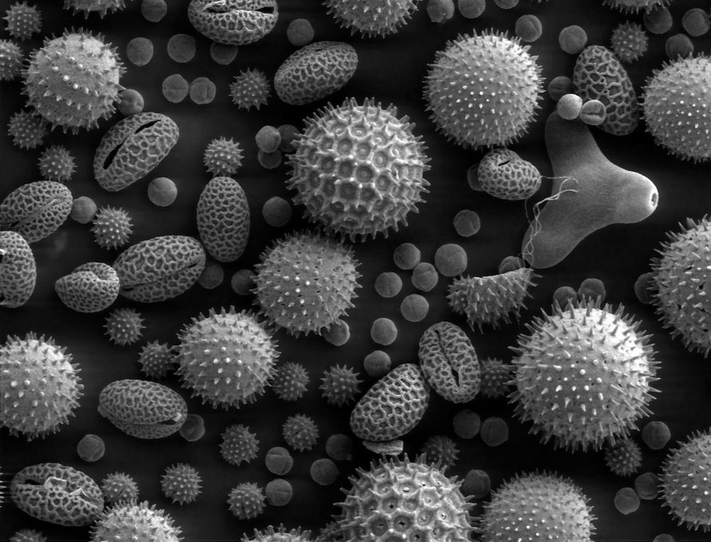
Image: Dartmouth College Electron Microscope Facility, via Wikimedia Commons, public domain.
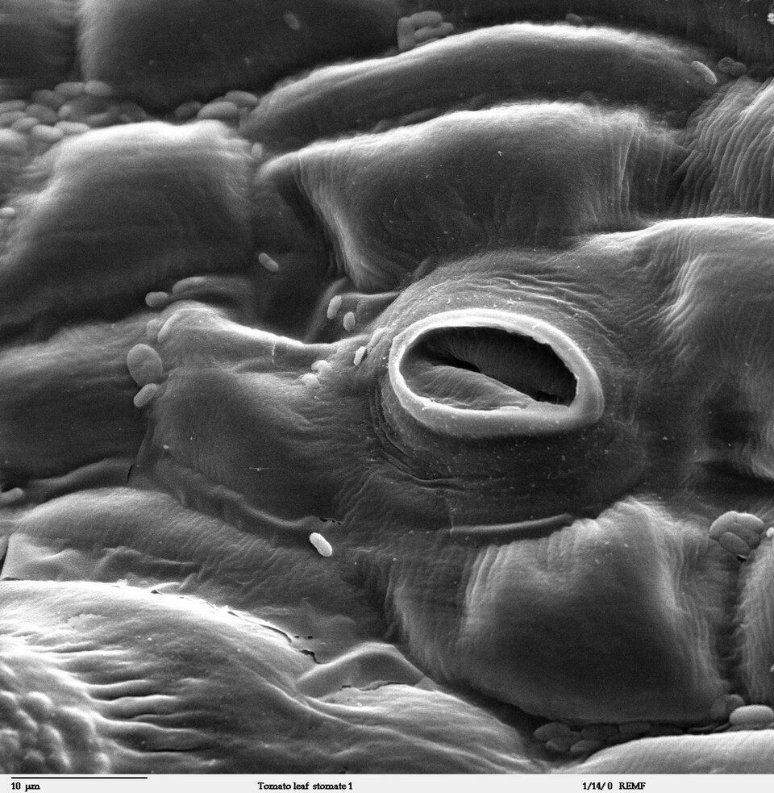
Image: Dartmouth College Electron Microscope Facility (no individual author named on the file page), via Wikimedia Commons, public domain.
Consider it when
- You need surface structure from micrometres to nanometres: leaf surfaces, stomata, trichomes, wax crystals, pollen, seed coats, insect cuticle, fungal hyphae, biofilms, powders, fibres.
- You want composition contrast (BSE) or element maps (EDS).
- You need a large depth of field: SEM images keep rough surfaces in focus.
Not the right tool when
What the sample needs
- Dry and stable in vacuum, mounted on a stub with conductive tape or paint.
- A conductive coating, unless imaged in low vacuum or at low voltage.
- Biological samples: fixation, dehydration and critical-point drying. This takes one to several days.
- Size that fits the stub and chamber; ask the staff.
What you get
- 2D images with a strong 3D look (SE), or composition contrast (BSE).
- Fields from millimetres down to a few hundred nanometres.
- Detail at the nanometre scale; see the manufacturer figures above.
- Minutes per image once the sample is in; preparation takes longer.
Typical uses in the faculty's fields
- Plant science: stomata, trichomes, cuticle and wax, pollen, seed coats.
- Entomology: morphology for identification; mouthparts, sensilla, eggs.
- Food science: powder particles, starch granules, the microstructure of dried products.
- Soil and environment: mineral particles, microplastics, microbes on surfaces.
- Veterinary science: parasites, bacteria on tissue surfaces.
At the unit
- JEOL JSM-IT710HR and JEOL JSM-IT800, both with EDS.
- Startup and shutdown guides in preparation.
- Contact: Einat Zelinger, Head of Unit, or Tally Kossovsky. For EDS element maps, Einat Zelinger.
Cryo-SEM: imaging samples with their water in Planned, not yet installed
Drying ruins many samples. Cryo-SEM freezes them instead, then images the frozen sample on a cold stage, so emulsions, gels and fresh tissue keep their shape.
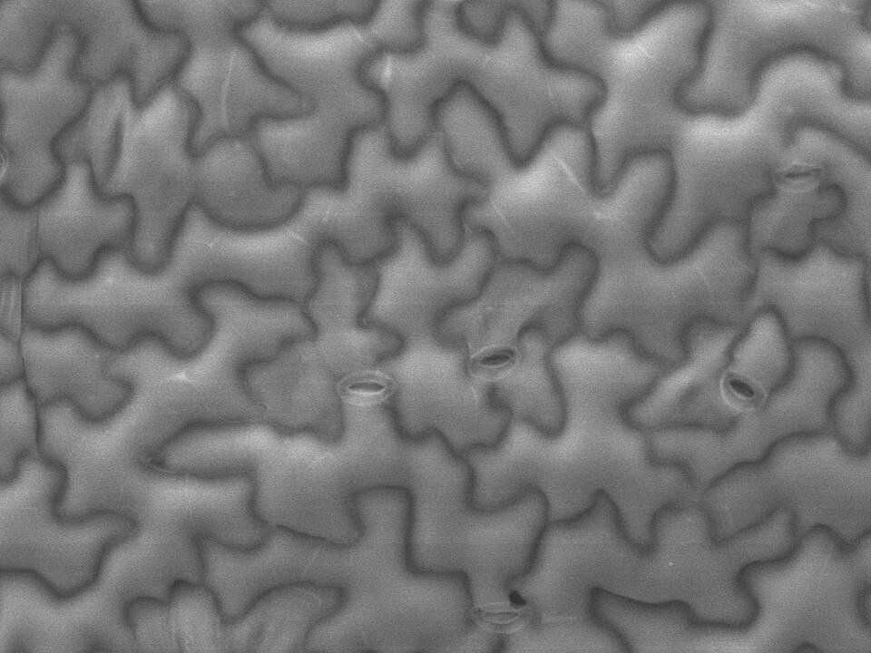
Image: Emmanuel Boutet, via Wikimedia Commons, CC BY-SA 3.0.
What it does
A small piece of fresh sample is mounted on a holder and plunged into liquid nitrogen slush, nitrogen cooled until it is partly solid. Slush freezes faster than boiling liquid nitrogen, so ice crystals stay small and do less damage to cells. The frozen sample is moved, cold and under vacuum, into a preparation chamber attached to the SEM.
There it can be fractured with a cold knife to expose the inside. The fracture tends to follow weak planes such as membranes, so it often reveals cell contents and interfaces. Next the sample is warmed briefly, typically to around −90 °C, so a thin layer of surface ice turns straight to vapour. This sublimation, also called etching, lifts structures out of the ice so they stand in relief. Some workflows then sputter a thin metal coat onto the surface in the cryo chamber to reduce charging; others image the frozen sample uncoated at low voltage. Either way the sample goes onto a cold stage in the SEM and is imaged at around −140 °C.
The result shows the sample with its water in place, with no chemical fixation or drying. That matters for anything that shrinks, collapses or rearranges when dried: emulsions, gels, foams, hydrated plant tissue, biofilms, soil crusts, ice crystals in frozen food. Preparation and imaging can often be done in one day.
The limits: large or watery samples freeze slowly in the middle and form damaging ice crystals; the beam damages frozen samples at high magnification; detail is coarser than on a dry, coated sample at room temperature; and you see one fracture face, partly chosen by chance.
Status at the unit: Planned, not yet installed This chapter explains the method so you know what it will offer; ask the staff about the timing.
Consider it when
- The sample changes when dried: fresh leaves and fruit, gels, emulsions, foams, ice cream, cheese, hydrogels, biofilms.
- You want to see where water, ice or fat sits.
- You want a quick result without fixation.
Not the right tool when
- You need ultrastructure in 3D: use volume EM (planned).
- The sample is large and watery throughout.
- You need fluorescent labels.
What the sample needs
- Fresh and small, typically a few millimetres; ask the staff about holder size.
- Usually no fixation; the sample is frozen just before imaging.
What you get
- 2D images of the frozen surface or fracture face.
- Detail from micrometres to tens of nanometres, depending on the sample.
- Often a few hours from fresh sample to images.
Typical uses in the faculty's fields
- Food science: emulsions, gels, dough, ice cream, cheese.
- Plant science: fresh tissue, fruit cuticle, water in tissues.
- Soil and environment: biological soil crusts, hydrated clays, biofilms.
- Entomology: soft larvae that collapse when dried.
At the unit
- Cryo preparation for SEM: Planned, not yet installed
- Contact: Einat Zelinger, Head of Unit (einat.zelinger@mail.huji.ac.il); ask about the timing.
STEM in the SEM: seeing through thin sections
With a transmission detector under the sample, an SEM can record the electrons that pass through a thin section or a layer of particles, much like a transmission electron microscope.
What it does
An SEM normally records electrons coming back from the surface. A STEM detector (scanning transmission electron microscopy) sits under the sample instead and records the electrons that pass through it. The sample must therefore be thin enough for electrons to cross: an ultrathin section of resin-embedded tissue, typically 50–100 nm thick, or particles spread on a thin support film. Both sit on the 3 mm metal grids used in transmission electron microscopes (TEM).
SEM voltages (up to 30 kV) are low compared with a TEM. Slower electrons scatter more strongly in the sample, so thin biological sections show good contrast even with light staining. The scanned beam builds the image point by point. Many STEM-in-SEM detectors are split into segments that give bright-field and dark-field images at the same time; ask the staff what the unit's detector records.
What it can and cannot replace in a TEM
- It can: survey sections for cell and organelle morphology, check sections before volume EM (planned), measure size and shape of nanoparticles, bacteria and viruses on grids, and give quick answers without a separate instrument.
- It cannot: match a dedicated TEM's best resolution, image thick sections at full detail (low-voltage electrons do not get through), or do TEM-specific methods such as electron diffraction, high-resolution lattice imaging and cryo-TEM of frozen-hydrated particles. For those, ask the staff about access to a TEM.
Whether the unit offers TEM itself, ask the staff. To confirm with staff
The unit has a STEM detector. Which SEM it is fitted to has not been confirmed for this page. To confirm with staff JEOL lists a STEM detector for 3 mm grids as an option for the JSM-IT800 (manufacturer information).
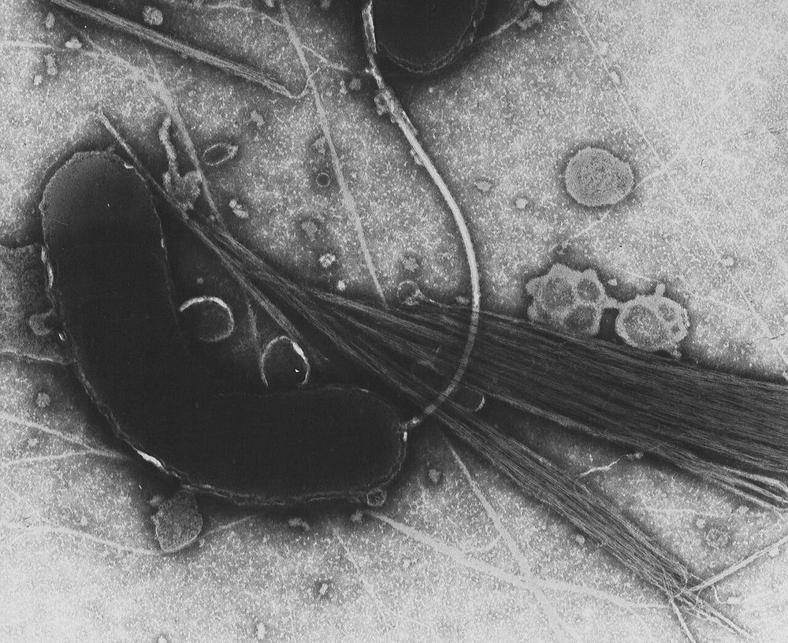
Image: Tom Kirn, Ron Taylor, Louisa Howard, Dartmouth Electron Microscope Facility, via Wikimedia Commons, public domain.
Consider it when
- You have, or can make, ultrathin sections and need cell or organelle morphology at nanometre detail.
- You need size and shape of particles: nanoparticles, viruses, bacteria, emulsion droplets after negative staining.
- You want to check sections before a longer volume EM run (planned).
Not the right tool when
What the sample needs
- Ultrathin sections (typically 50–100 nm) on grids, cut with an ultramicrotome from resin-embedded tissue; or particles on support-film grids.
- Sections: fixation, heavy-metal staining and resin embedding take one to two weeks.
- Particles: dried or negatively stained on a support-film grid, within a day.
What you get
- 2D transmission images in bright field and/or dark field.
- Nanometre-scale detail, coarser than a dedicated TEM's best.
- Fields up to the size of the section.
- Minutes per image.
Typical uses in the faculty's fields
- Plant science: chloroplast and cell-wall ultrastructure in sections.
- Food science and environment: nanoparticles in food or soil extracts.
- Veterinary science and microbiology: bacteria and viruses on grids.
At the unit
- STEM detector for the SEM; which SEM carries it is not yet confirmed. To confirm with staff
- Contact: Tally Kossovsky.
Volume EM: serial block-face SEM with the Katana Planned, not yet installed
Cut, image, repeat, thousands of times. A microtome inside the SEM chamber shaves the top off a resin block and the SEM images each fresh face, giving a 3D stack of ultrastructure.
What it does
The sample is fixed, stained with heavy metals such as osmium and uranium so that membranes scatter electrons strongly, and embedded in a hard resin block. The block is trimmed to the region of interest, often well under a millimetre across, and mounted on a small in-chamber microtome. The SEM images the flat top of the block with backscattered electrons; the stained membranes appear as dark or bright lines. Then a diamond knife cuts a thin slice off the top, the SEM images the new face, and the cycle repeats. This is serial block-face SEM, one kind of volume EM.
The result is a stack of hundreds to thousands of aligned images: a 3D block in which every membrane, organelle and cell boundary is visible, without labels. The slices fall away as debris, so the sample is consumed.
The Katana from ConnectomX mounts on the SEM stage, cuts with a diamond knife, and makes slices as thin as 20 nm. Its knife oscillates ultrasonically to cut cleanly, and it works with JEOL's SEM Supporter software. Manufacturer figures In practice, slices of about 30–100 nm are common for biological tissue. Status at the unit: Planned, not yet installed Ask the staff about the timing.
The real cost: time and data
Preparation takes weeks: fixation, several staining steps, dehydration, resin embedding and curing, then trimming and test sections. The imaging run takes from a night to several days. The data are large:
Analysis often takes longest: tracing (segmenting) structures through thousands of slices can take weeks. Plan storage and analysis with the staff before the run.
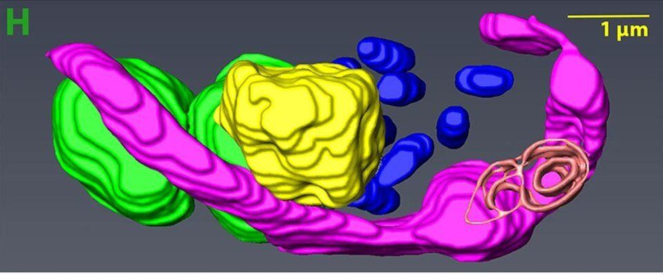
Image: Samriti Midha, Daniel J. Rigden, Stefanos Siozios, Gregory D. D. Hurst, Andrew P. Jackson, via Wikimedia Commons, CC BY-SA 4.0; cropped, and the crop is shared under the same licence.
Consider it when
- You need membranes, organelles and cell contacts in 3D, over tens to hundreds of micrometres.
- A few thin sections are not enough to answer the question: shapes, connections, counts or volumes in 3D.
- Over micro-CT: when you need nanometre detail, not tissue architecture.
- Over confocal: when you need everything in the cell, unlabelled, at nanometre detail.
Not the right tool when
- The answer is in 2D: use STEM on sections, or SEM.
- You need a large sample or the whole organism: use micro-CT or light sheet.
- You need to know which molecule is where: add fluorescence (CLEM).
- You need many samples quickly.
What the sample needs
- Excellent fixation, en-bloc heavy-metal staining and resin embedding. The stain gives contrast and reduces charging; the resin still charges under the beam, and the staff will choose how to manage this.
- A block trimmed to the region of interest. Micro-CT of the block helps to find it.
- Weeks of preparation, planned with the staff from the start.
What you get
- A 3D image stack of ultrastructure.
- Nanometre-scale pixels in the block face; slices from 20 nm thick (manufacturer figure), in practice often about 30–100 nm for biological tissue.
- Volumes of tens to hundreds of micrometres on a side.
- One night to several days of imaging; tens to hundreds of gigabytes.
Typical uses in the faculty's fields
- Plant science: chloroplast and mitochondria networks, plasmodesmata, cell-wall development in 3D.
- Plant–microbe biology: symbionts and pathogens inside host cells.
- Entomology and veterinary science: tissue ultrastructure, parasites inside host tissue.
At the unit
- ConnectomX Katana in-chamber microtome: Planned, not yet installed
- Contact: Tally Kossovsky; ask about the timing.
Correlative workflows: one sample, two techniques
Many questions span two scales or need two kinds of information. Correlative imaging uses one technique to find the target and a second to see it in detail, on the same sample.
Micro-CT, then SEM or volume EM
Micro-CT shows where things are inside an intact sample but not their fine structure. Scanning a seed, an insect or a resin block first tells you exactly where to cut, fracture or trim, so the electron microscope looks at the right few hundred micrometres. For volume EM, a micro-CT scan of the embedded block is a common way to check staining and find the target before a multi-day run. Volume EM is planned at the unit, not yet installed (chapter 11).
Light sheet, then confocal
The light sheet maps a whole cleared organ quickly at around 1 µm. Once you know which region matters, a confocal image of that region, or STED on a thin section from it, gives finer detail. Clearing media and mounting must suit both instruments; agree this before you clear.
Fluorescence, then EM (CLEM)
Correlative light and electron microscopy (CLEM) combines what fluorescence is good at, telling which cells or molecules carry a label, with what EM is good at, showing all the structure around them. Typically you image a section or a sample on a marked grid or dish with fluorescence, record where the labelled cells are, then prepare the same sample for EM and find them again.
The difficulties are practical. EM preparation (heavy metals, resin, dehydration) usually destroys fluorescence, so the light images are taken first. The sample shrinks or distorts during preparation, so you need landmarks visible in both: grid markings, the outline of the tissue, or added marks. And the two images must be overlaid in software afterwards.
Correlative projects usually involve more than one staff member: Einat Zelinger or Daniel Waiger for the light side, Tally Kossovsky for micro-CT, and Einat Zelinger or Tally Kossovsky for the SEM; ask the staff who covers the rest. Mention it in the Project Initiation Form.
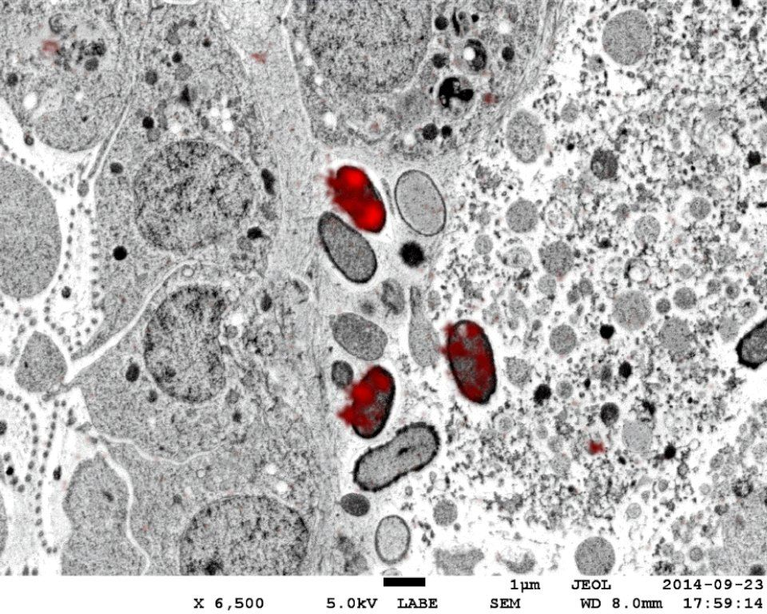
Image: Martin T. Jahn, via Wikimedia Commons, CC BY-SA 4.0.
Comparison table
All techniques side by side. Resolution and times are rough guides; the chapters above give the details and the status of each figure. On a phone, scroll the table sideways.
| Technique | Status at the unit | Contrast from | Sample state | Lateral resolution | Depth / 3D | Field of view | Prep time | Live | Instrument | Contact |
|---|---|---|---|---|---|---|---|---|---|---|
| Histology | New service, in development: brightfield now; multiplex planned | Dyes and chromogens (IHC); fluorophores for multiplex (planned) | Fixed, paraffin-embedded (FFPE) | ≈ widefield; cellular detail ≈0.5–1 µm | 2D sections, 3–5 µm (animal), often 8–12 µm (plant) | Whole sections, up to whole organs | 1–2 weeks (general practice) | No | Histology service; imaging instrument to confirm | CSI unit (core.csi@mail.huji.ac.il) |
| Widefield | Available | Fluorescence; absorbed light (brightfield) | Living or fixed; slides, dishes, plates | ≈250 nm | 2D; best on thin samples | 0.1 mm to a few mm per image | Minutes to hours | Yes | EVOS FL Auto | Daniel Waiger |
| Confocal | Available | Fluorescence | Living or fixed, under a coverslip | ≈180–200 nm | Optical sections, z-stacks; tens to hundreds of µm deep | Tens of µm to ≈1 mm; tiles beyond | Hours to days (staining) | Yes | Leica SP8, Leica Stellaris | Daniel Waiger |
| STED | Available | Fluorescence, with depletion beam | Mostly fixed; STED-compatible dyes; thin | ≈50–80 nm in practice | 2D or thin stacks near the coverslip | Tens of µm | Days (staining, mounting) | Limited | Leica Stellaris STED | Daniel Waiger |
| Light sheet | Available | Fluorescence | Cleared, or living in gel or medium | ≈1 µm | Full 3D through mm-scale samples; depth detail several µm | mm (largest sample: ask staff) | Days to weeks (clearing); short for live | Yes | Luxendo MuVi SPIM | Daniel Waiger |
| Micro-CT | Available | X-ray absorption; phase contrast at edges | Dry, dense, or stained; held still | Voxels 2–20 µm in practice (details ≈2–3 voxels); details down to 0.35 µm (manufacturer figure) | Full 3D, no cutting | mm to cm | None to days (staining) | Rarely | Bruker SkyScan 1272 | Tally Kossovsky |
| SEM | Available | SE (topography), BSE (composition), X-rays (EDS on both SEMs) | Dry; coated, or uncoated in low vacuum (to confirm) | Nanometre scale; ≈1 nm (IT710HR), sub-nm in the IT800's best configuration (manufacturer figures; configuration to confirm) | Surface only | mm down to sub-µm | Hours to days | No | JEOL JSM-IT710HR, JSM-IT800 | Einat Zelinger |
| Cryo-SEM (planned) | Planned, not yet installed | As SEM, on a frozen sample | Fresh, frozen-hydrated | Coarser than SEM on dry, coated samples | Surface or fracture face | mm down to µm | Hours; often the same day | No | Cryo system for SEM (planned) | Einat Zelinger |
| STEM in SEM | Available (which SEM: to confirm) | Transmitted electrons (bright field and/or dark field) | Ultrathin sections or particles on 3 mm grids | Nanometre scale, coarser than a dedicated TEM's best | 2D projection of a thin section | Up to the section size | 1–2 weeks for sections; hours for particles on grids | No | STEM detector on an SEM (which one to confirm) | Tally Kossovsky |
| Volume EM (planned) | Planned, not yet installed | BSE from a heavy-metal-stained block face | Resin-embedded block | nm pixels; slices from 20 nm (manufacturer figure) | Full 3D ultrastructure | Tens to hundreds of µm | Weeks | No | Katana microtome in an SEM (planned) | Tally Kossovsky |
Glossary
Terms from this page. Microscopy basics has a glossary for light microscopy settings.
- FFPE
- Formalin-fixed, paraffin-embedded: tissue fixed in formalin and set in a wax block for sectioning.
- H&E
- Haematoxylin and eosin, the standard tissue stain: nuclei purple, cytoplasm and matrix pink.
- IHC (immunohistochemistry)
- Locating a protein in a section with an antibody, shown as a coloured deposit such as brown DAB.
- Multiplex immunofluorescence
- Staining several proteins on one section, each with its own fluorescent colour.
- Tyramide signal amplification (TSA)
- An enzyme reaction that deposits many dye molecules at each antibody, used for sequential multiplex staining such as Opal.
- Whole-slide image
- One very large image of an entire slide, stitched from many fields of view.
- QuPath
- Free software for viewing and analysing whole-slide images, including per-cell measurements.
- Optical section
- A sharp image of one plane inside a thick sample, made by rejecting out-of-focus light rather than by cutting.
- Pinhole
- The small opening in a confocal that lets in-focus light through and blocks the rest.
- STED
- Stimulated emission depletion: a doughnut-shaped beam switches dyes off around the focal spot to shrink it.
- Light sheet
- A thin plane of light sent in from the side, so only the plane being imaged is lit.
- Clearing
- Chemical treatment that makes fixed tissue transparent for deep light microscopy.
- Projection / reconstruction
- In micro-CT: one X-ray shadow image per angle, and the computation that turns them into a 3D volume.
- Voxel
- One box of a 3D image; the 3D version of a pixel.
- Contrast staining
- Soaking soft tissue in a heavy-element solution, such as iodine, so it shows up in X-ray or electron images.
- SE (secondary electrons)
- Low-energy electrons from the top nanometres of the sample. They show surface shape.
- BSE (backscattered electrons)
- Beam electrons bounced back from the sample. Heavier elements look brighter.
- EDS
- Energy-dispersive X-ray spectroscopy: identifies and maps elements from the X-rays the beam produces.
- Field-emission gun (FEG)
- A sharp, bright electron source that keeps the beam fine, especially at low voltage.
- Accelerating voltage (kV)
- The energy of the beam electrons. Low kV: signal from the surface, less charging. High kV: finer spot, deeper signal, EDS.
- Charging
- Build-up of charge on a non-conducting sample, causing glare, streaks and drift.
- Coating
- A few-nanometre layer of gold, platinum or carbon, applied in a sputter or evaporation coater, that makes the surface conduct. Carbon is used before EDS, because metal coatings add their own X-ray peaks.
- Low vacuum
- An SEM mode with a little gas in the chamber that neutralises charge, so uncoated samples can be imaged. Wet samples still dry out.
- Critical-point drying
- Drying through a state with no surface tension, so soft structures do not collapse.
- Sublimation (etching)
- In cryo-SEM: turning a thin layer of surface ice straight to vapour to reveal structure.
- TEM (transmission electron microscopy)
- Electrons pass through an ultrathin section or particles on a grid; the classic ultrastructure technique.
- STEM
- Scanning transmission electron microscopy: recording electrons that pass through a thin sample.
- Grid
- A 3 mm metal mesh disc that holds thin sections or particles for transmission imaging.
- Ultrathin section
- A slice of resin-embedded tissue, typically 50–100 nm thick, cut with a diamond knife.
- Volume EM / SBF-SEM
- 3D electron microscopy; serial block-face SEM images a block, cuts a slice off, and repeats.
- Segmentation
- Tracing structures in an image or volume so they can be measured or rendered.
- CLEM
- Correlative light and electron microscopy: fluorescence and EM on the same sample.
Not sure which technique fits? Fill in the Project Initiation Form and ask the staff. A short conversation before you prepare samples can save weeks.
Image credits
The fly micro-CT images in the hero and in chapter 7 are the unit's own data from the SkyScan 1272, and the broiler muscle figure in chapter 2 comes from a paper imaged at the unit (Dayan et al. 2023; more on the publications page). Every other photograph is an example from elsewhere, from Wikimedia Commons, used under the licence shown and resized for the web; they may be replaced by the unit's own images over time.
- Hero: Arabidopsis root tip, His2B-GFP (confocal). Zirc (Utrecht University). Source page on Wikimedia Commons; public domain.
- Hero: Mitochondria, mammalian lung (TEM). Louisa Howard, Dartmouth Electron Microscope Facility. Source page on Wikimedia Commons; public domain.
- 2 · Histology: Broiler pectoral muscle, Sirius Red/Fast Green, with automated fibre detection (from the unit). Figure 3 from Dayan J, Goldman N, Waiger D, Melkman-Zehavi T, Halevy O, Uni Z, Poultry Science (2023), doi:10.1016/j.psj.2023.102792; reproduced by the authors; CC BY 4.0; resized for the web.
- 2 · Histology: Benign kidney, H&E (intermediate magnification). Nephron. Source page on Wikimedia Commons; CC BY-SA 3.0.
- 2 · Histology: Mature Ranunculus root, cross section. Berkshire Community College Bioscience Image Library. Source page on Wikimedia Commons; CC0 1.0.
- 2 · Histology: Multiplex immunofluorescence, ileal lymphoid follicle. DntsS (i3S HEMS facility, Porto). Source page on Wikimedia Commons; CC BY-SA 4.0.
- 3 · Widefield: Endothelial cells, 3-colour fluorescence. NIH ImageJ sample image (author not named on the file page). Source page on Wikimedia Commons; public domain.
- 4 · Confocal: Barley root, confocal cross section. Mark Talbot, CSIRO. Source page on Wikimedia Commons; CC BY 3.0.
- 5 · STED: Confocal vs STED, nuclear pore proteins. Tassekaffee. Source page on Wikimedia Commons; CC BY-SA 3.0.
- 6 · Light sheet: Sterlet sturgeon larvae, light sheet. LexyLordman (CCMAR Quantitative Bio-Imaging lab). Source page on Wikimedia Commons; CC BY-SA 4.0.
- 8 · SEM: Pollen of common plants (SEM). Dartmouth College Electron Microscope Facility. Source page on Wikimedia Commons; public domain.
- 8 · SEM: Tomato leaf stoma (SEM). Dartmouth College Electron Microscope Facility (no individual author named on the file page). Source page on Wikimedia Commons; public domain.
- 9 · Cryo-SEM: Arabidopsis leaf epidermis, cryo-SEM. Emmanuel Boutet. Source page on Wikimedia Commons; CC BY-SA 3.0.
- 10 · STEM in the SEM: Vibrio cholerae, negative-stain TEM. Tom Kirn, Ron Taylor, Louisa Howard, Dartmouth Electron Microscope Facility. Source page on Wikimedia Commons; public domain.
- 11 · Volume EM: Bodo saltans 3D model from SBF-SEM. Samriti Midha, Daniel J. Rigden, Stefanos Siozios, Gregory D. D. Hurst, Andrew P. Jackson. Source page on Wikimedia Commons; CC BY-SA 4.0; cropped, and the crop is shared under the same licence.
- 12 · Correlative: Poribacteria in sponge tissue, correlative microscopy. Martin T. Jahn. Source page on Wikimedia Commons; CC BY-SA 4.0.